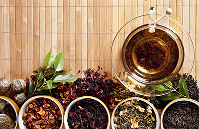
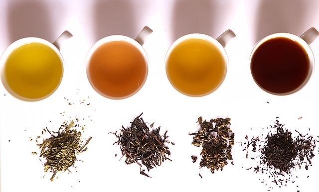
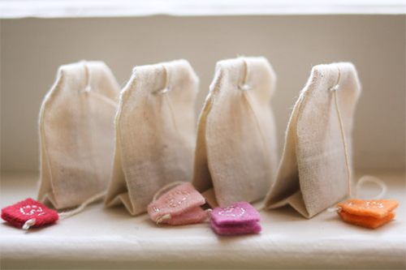

What's tea?
Tea is amazing!
That's a good question! Tea is the second most consumed drink in the world, surpassed only by water. An often-surprising fact to tea novices is that all teas (Black, Green, Oolong, White, and Pu'erh) come from the same plant. The scientific name of this versatile plant is Camellia sinensis (it's actually related to the lovely camellia flowers seen in botanical gardens and landscapes). Camellia sinensis is a sub-tropical, evergreen plant native to Asia but is now grown around the world. The tea plant grows best in loose, deep soil, at high altitudes, and in sub-tropical climates. So, in short, "tea" is anything derived from the Camellia sinensis plant. Anything else, while sometimes called "tea", is more accurately referred to as an herbal tea or tisane. Tisanes include chamomile, rooibos and fruit teas. We'll learn about those in a minute.Tea originated in southwestern China, where it was used as a medicinal drink. It was popularized as a recreational drink during the Chinese Tang dynasty, and tea drinking spread to other East Asian countries. Portuguese priests and merchants introduced it to the West during the 16th century. During the 17th century, drinking tea became fashionable among Britons, who started large-scale production and commercialization of the plant in India to bypass a Chinese monopoly at that time.
Teas which are processed in the traditional fashion are called Orthodox teas. Orthodox teas generally contain only the top two tender leaves and an unopened leaf bud, which are plucked carefully by hand and then processed using five basic steps, creating the thousands of varieties of tea we know and love today (note: While tea plants do have small flowers, the "buds" tea people refer to are the young, unopened leaves, not flowers). Most Orthodox tea production these days involves a unique combination of age-old methods, such as bamboo trays, to allow the leaves to wither on, and modern, innovative machinery, like leaf rollers carefully calibrated to mimic motions originally done by hand. A true art form, the tea is handled by artisans with often generations of training from the moment of plucking to when the tea is finished. For some teas, one batch can take several days of work.
The phrase herbal tea usually refers to infusions of fruit or herbs made without the tea plant, such as steeps of rosehip, chamomile, or rooibos. These are also known as tisanes or herbal infusions to distinguish them from "tea" as it is commonly construed.
The three primary components of brewed tea (also called the "liquor") are:
- Essential Oils - these provide tea's delicious aromas and flavors.
- Polyphenols - these provide the "briskness" or astringency in the mouth and are the components that also carry most of the health benefits of tea.
- Caffeine - found naturally in coffee, chocolate, tea and Yerba Mate, caffeine provides tea's natural energy boost. How the leaves are processed will determine their final classification as black, green, etc. We'll discuss these styles of tea in the next lesson.
Tea history
Tea plants are native to East Asia, and probably originated around the meeting points of the lands of north Burma and southwest China. Statistical cluster analysis, chromosome number, easy hybridization, and various types of intermediate hybrids and spontaneous polyploids indicate that likely a single place of origin exists for Camellia sinensis, an area including the northern part of Burma, and Yunnan and Sichuan provinces of China. Tea drinking may have begun in the Yunnan region during the Shang Dynasty in China, when it was used for medicinal purposes. It is also believed that in Sichuan, "people began to boil tea leaves for consumption into a concentrated liquid without the addition of other leaves or herbs, thereby using tea as a bitter yet stimulating drink, rather than as a medicinal concoction."
Tea preparation in ancient China
Chinese legends attribute the invention of tea to Shennong in 2737 BC, although evidence suggests that tea drinking may have been introduced from the southwest of China (Sichuan/Yunnan area). The earliest written records of tea come from China. The word tú 荼 appears in the Shijing and other ancient texts to signify a kind of "bitter vegetable" (苦菜), and it is possible that it referred to a number of different plants such as sowthistle, chicory, or smartweed, as well as tea. In the Chronicles of Huayang, it was recorded that the Ba people in Sichuan presented tu to the Zhou king. The state of Ba and its neighbour Shu were later conquered by the Qin, and according to the 17th century scholar Gu Yanwu who wrote in Ri Zhi Lu (日知錄): "It was after the Qin had taken Shu that they learned how to drink tea." Another possible early reference to tea is found in a letter written by the Qin Dynasty general Liu Kun who requested that some "real tea" to be sent to him.The earliest known physical evidence of tea was discovered in 2016 in the mausoleum of Emperor Jing of Han in Xi'an, indicating that tea from the genus Camellia was drunk by Han Dynasty emperors as early as 2nd century BC. The Han dynasty work "The Contract for a Youth", written by Wang Bao in 59 BC, contains the first known reference to boiling tea. Among the tasks listed to be undertaken by the youth, the contract states that "he shall boil tea and fill the utensils" and "he shall buy tea at Wuyang". The first record of tea cultivation is also dated to this period (the reign of Emperor Xuan of Han), during which tea was cultivated on Meng Mountain (蒙山) near Chengdu. Another early credible record of tea drinking dates to the third century AD, in a medical text by Hua Tuo, who stated, "to drink bitter t'u constantly makes one think better." However, before the mid-8th century Tang dynasty, tea-drinking was primarily a southern Chinese practice. It became widely popular during the Tang Dynasty, when it was spread to Korea, Japan, and Vietnam. In India, tea has been drunk for medicinal purposes for a long but uncertain period, but apart from the Himalayan region it seems not to have been used as a beverage until the British introduced tea-drinking there much later.
Through the centuries, a variety of techniques for processing tea, and a number of different forms of tea, were developed. During the Tang dynasty, tea was steamed, then pounded and shaped into cake form, while in the Song dynasty, loose-leaf tea was developed and became popular. During the Yuan and Ming dynasties, unoxidized tea leaves were first pan-fried, then rolled and dried, a process that stops the oxidation process which turns the leaves dark and allows tea to remain green. In the 15th century, oolong tea, in which the leaves were allowed to partially oxidize before pan-frying, was developed. Western tastes, however, favoured the fully oxidized black tea, and the leaves were allowed to oxidize further. Yellow tea was an accidental discovery in the production of green tea during the Ming dynasty, when apparently sloppy practices allowed the leaves to turn yellow, but yielded a different flavour as a result.
Tea was first introduced to Portuguese priests and merchants in China during the 16th century, at which time it was termed chá. The earliest European reference to tea, written as Chiai, came from Delle navigationi e viaggi written by a Venetian, Giambattista Ramusio, in 1545. The first recorded shipment of tea by a European nation was in 1607 when the Dutch East India Company moved a cargo of tea from Macao to Java, then two years later, the Dutch bought the first assignment of tea which was from Hirado in Japan to be shipped to Europe. Tea became a fashionable drink in The Hague in the Netherlands, and the Dutch introduced the drink to Germany, France and across the Atlantic to New Amsterdam (New York).
The first record of tea in English came from a letter written by Richard Wickham, who ran an East India Company office in Japan, writing to a merchant in Macao requesting "the best sort of chaw" in 1615. Peter Mundy, a traveller and merchant who came across tea in Fujian in 1637, wrote, "chaa — only water with a kind of herb boyled in it ". Tea was sold in a coffee house in London in 1657, Samuel Pepys tasted tea in 1660, and Catherine of Braganza took the tea-drinking habit to the British court when she married Charles II in 1662. Tea, however, was not widely consumed in Britain until the 18th century, and remained expensive until the latter part of that period. British drinkers preferred to add sugar and milk to black tea, and black tea overtook green tea in popularity in the 1720s. Tea smuggling during the 18th century led to the general public being able to afford and consume tea. The British government removed the tax on tea, thereby eliminating the smuggling trade by 1785. In Britain and Ireland, tea was initially consumed as a luxury item on special occasions, such as religious festivals, wakes, and domestic work gatherings. The price of tea in Europe fell steadily during the 19th century, especially after Indian tea began to arrive in large quantities; by the late 19th century tea had become an everyday beverage for all levels of society. The popularity of tea also informed a number of historical events – the Tea Act of 1773 provoked the Boston Tea Party that escalated into the American Revolution, and the need to address the issue of British trade deficit caused by the demand for Chinese tea led to a trade in opium that resulted in the Opium Wars.
Tea was introduced into India by the British in an attempt to break the Chinese monopoly on tea. In 1841, Arthur Campbell brought seeds of Chinese tea from the Kumaun region and experimented with planting tea in Darjeeling. The Alubari tea garden was opened in 1856 and Darjeeling tea began to be produced. In 1848, Robert Fortune was sent by the East India Company on a mission to China to bring the tea plant back to Great Britain. He began his journey in high secrecy as his mission occurred in the lull between the Anglo-Chinese First Opium War (1839–1842) and Second Opium War (1856–1860). The Chinese tea plants he brought back were introduced to the Himalayas, though most did not survive. The British had discovered that a different variety of tea was endemic to Assam and the northeast region of India and that it was used by the local Singpho people, and these were then grown instead of the Chinese tea plant. Using the Chinese planting and cultivation techniques, the British launched a tea industry by offering land in Assam to any European who agreed to cultivate it for export. Tea was originally consumed only by anglicized Indians; however, it became widely popular in India in the 1950s because of a successful advertising campaign by the India Tea Board.
Preparation
Teas of different levels of oxidation (L to R):
green, yellow, oolong, and black
green, yellow, oolong, and black
Black tea
Popular varieties of black tea include Assam, Nepal, Darjeeling, Nilgiri, Turkish, Keemun, and Ceylon teas.Many of the active substances in black tea do not develop at temperatures lower than 90 °C (194 °F). As a result, black tea in the West is usually steeped in water near its boiling point, at around 99 °C (210 °F). The most common fault when making black tea is to use water at too low a temperature. Since boiling point drops with increasing altitude, it is difficult to brew black tea properly in mountainous areas. Warming the tea pot before steeping is critical at any elevation.
Western black teas are usually brewed for about four minutes and are usually not allowed to steep for less than 30 seconds or more than about five minutes (a process known as brewing or mashing in Britain). In many regions of the world, however, actively boiling water is used and the tea is often stewed. In India, black tea is often boiled for fifteen minutes or longer to make Masala chai, as a strong brew is preferred. Tea should be strained while serving.
Green tea
In regions of the world that prefer mild beverages, such as the West and Far East, green tea should be steeped in water around 80 to 85 °C (176 to 185 °F), the higher the quality of the leaves the lower the temperature. Regions such as North Africa or Central Asia prefer a bitter tea, and hotter water is used. In Morocco, green tea is steeped in boiling water for 15 minutes. The container in which green tea is steeped is often warmed beforehand to prevent premature cooling. High-quality green and white teas can have new water added as many as five or more times, depending on variety, at increasingly higher temperatures.Flowering tea
Flowering tea or blooming tea should be brewed at 100 °C (212 °F) in clear glass tea wares for up to three minutes. First pull 1/3 water to make the tea ball wet and after 30 seconds add the boiling water up to 4/5 of the capacity of the tea ware. The boiling water can help the tea ball bloom quickly and with a strong aroma of the tea. The height of glass tea ware should be 8–10 cm, which can help the tea and flowers bloom completely. One tea ball can be brewed 4–5 times.Oolong
Oolong tea should be brewed around 82 to 96 °C (185 to 205 °F), with the brewing vessel warmed before pouring the water. Yixing purple clay teapots are the traditional brewing-vessel for oolong tea which can be brewed multiple times from the same leaves, unlike green tea, seeming to improve with reuse. In the Chinese and Taiwanese Gongfu tea ceremony, the first brew is discarded, as it is considered a rinse of leaves rather than a proper brew.Pu-erh tea
Pu-erh teas require boiling water for infusion. Some prefer to quickly rinse pu-erh for several seconds with boiling water to remove tea dust which accumulates from the ageing process, then infuse it at the boiling point (100 °C or 212 °F), and allow it to steep from 30 seconds to five minutes.Premium or delicate tea
Some teas, especially green teas and delicate oolong teas, are steeped for shorter periods, sometimes less than 30 seconds. Using a tea strainer separates the leaves from the water at the end of the brewing time if a tea bag is not being used. However, the black Darjeeling tea, a premium Indian tea, needs a longer than average steeping time. Elevation and time of harvest offer varying taste profiles; proper storage and water quality also have a large impact on taste.Packaging
Oh! How sweet...
Tea bags
In 1907, American tea merchant Thomas Sullivan began distributing samples of his tea in small bags of Chinese silk with a drawstring. Consumers noticed they could simply leave the tea in the bag and reuse it with fresh tea. However, the potential of this distribution/packaging method would not be fully realised until later on. During World War II, tea was rationed in the United Kingdom. In 1953 (after rationing in the UK ended), Tetley launched the tea bag to the UK and it was an immediate success.The "pyramid tea bag" (or sachet) introduced by Lipton and PG Tips/Scottish Blend in 1996, attempts to address one of the connoisseurs' arguments against paper tea bags by way of its three-dimensional tetrahedron shape, which allows more room for tea leaves to expand while steeping. However, some types of pyramid tea bags have been criticised as being environmentally unfriendly, since their synthetic material is not as biodegradable as loose tea leaves and paper tea bags.
Loose tea
The tea leaves are packaged loosely in a canister, paper bag, or other container such as a tea chest. Some whole teas, such as rolled gunpowder tea leaves, which resist crumbling, are sometimes vacuum packed for freshness in aluminised packaging for storage and retail. The loose tea must be individually measured for use, allowing for flexibility and flavor control at the expense of convenience. Strainers, tea balls, tea presses, filtered teapots, and infusion bags prevent loose leaves from floating in the tea and over-brewing. A traditional method uses a three-piece lidded teacup called a gaiwan, the lid of which is tilted to decant the tea into a different cup for consumption.Compressed tea
Compressed tea (such as Pu-erh) is produced for convenience in transport, storage, and ageing. It can usually be stored longer without spoilage than loose leaf tea.Compressed tea is prepared by loosening leaves from the cake using a small knife, and steeping the extracted pieces in water. During the Tang dynasty, as described by Lu Yu, compressed tea was ground into a powder, combined with hot water, and ladled into bowls, resulting in a "frothy" mixture. In the Song dynasty, the tea powder would instead be whisked with hot water in the bowl. Although no longer practiced in China today, the whisking method of preparing powdered tea was transmitted to Japan by Zen Buddhist monks, and is still used to prepare matcha in the Japanese tea ceremony.
Instant tea
"Instant tea", similar to freeze-dried instant coffee and an alternative to brewed tea, can be consumed either hot or cold. Instant tea was developed in the 1930s, with Nestlé introducing the first commercial product in 1946, while Redi-Tea debuted instant iced tea in 1953.Delicacy of flavour is sacrificed for convenience. Additives such as chai, vanilla, honey or fruit, are popular, as is powdered milk.
During the Second World War British and Canadian soldiers were issued an instant tea known as 'Compo' in their Composite Ration Packs. These blocks of instant tea, powdered milk, and sugar were not always well received. As Royal Canadian Artillery Gunner, George C Blackburn observed:
But, unquestionably, the feature of Compo rations destined to be remembered beyond all others is Compo tea...Directions say to "sprinkle powder on heated water and bring to the boil, stirring well, three heaped teaspoons to one pint of water."
Every possible variation in the preparation of this tea was tried, but...it always ended up the same way. While still too hot to drink, it is a good-looking cup of strong tea. Even when it becomes just cool enough to be sipped gingerly, it is still a good-tasting cup of tea, if you like your tea strong and sweet. But let it cool enough to be quaffed and enjoyed, and your lips will be coated with a sticky scum that forms across the surface, which if left undisturbed will become a leathery membrane that can be wound around your finger and flipped away...
Bottled and canned tea
Canned tea is sold prepared and ready to drink. It was introduced in 1981 in Japan.The first bottled tea introduced by Indonesian tea company PT. Sinar Sosro in 1969 with brand name Teh Botol Sosro (or Sosro bottled tea).
In 1983, Swiss-based Bischofszell Food Ltd., was the first company to bottle ice tea on an industrial scale.
back
back
back
back
back
back